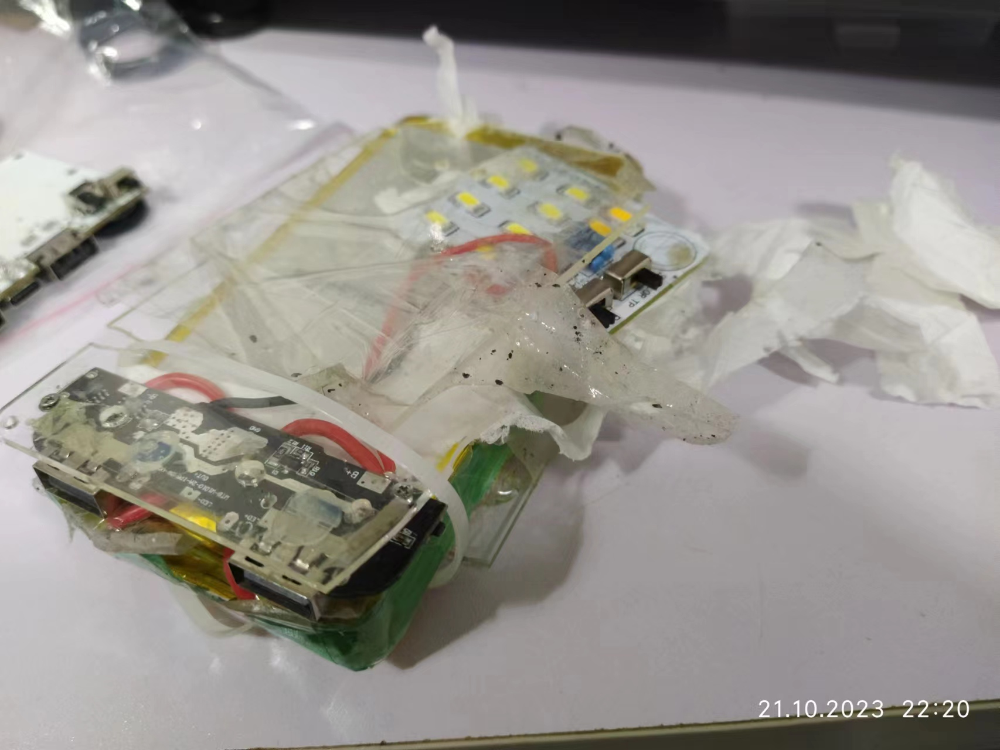
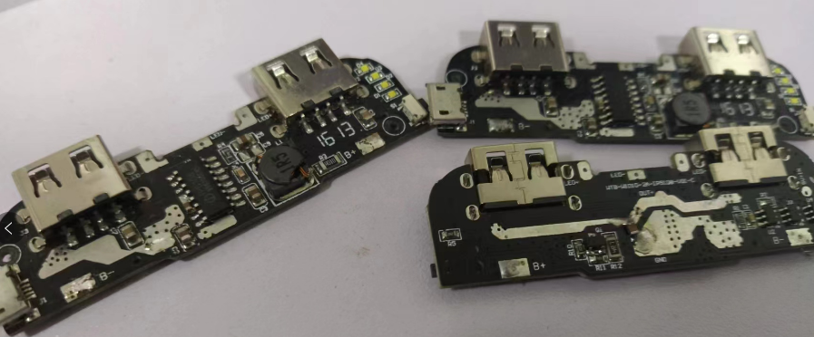
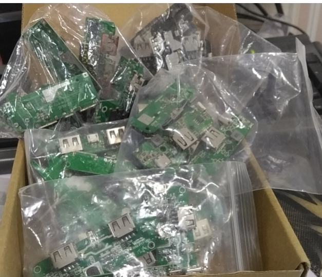
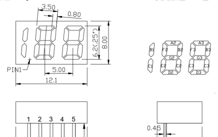
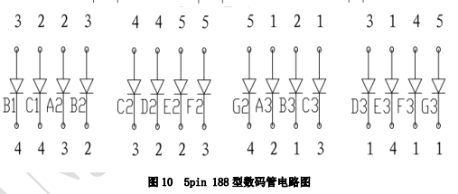
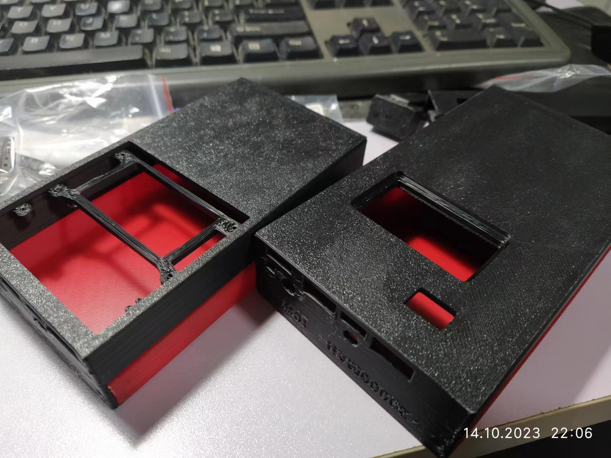
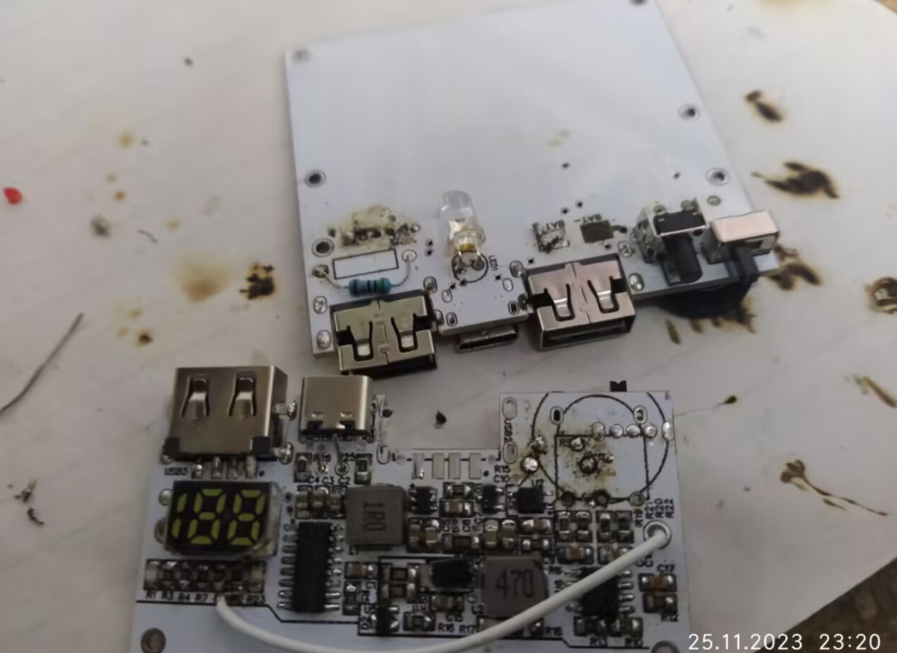
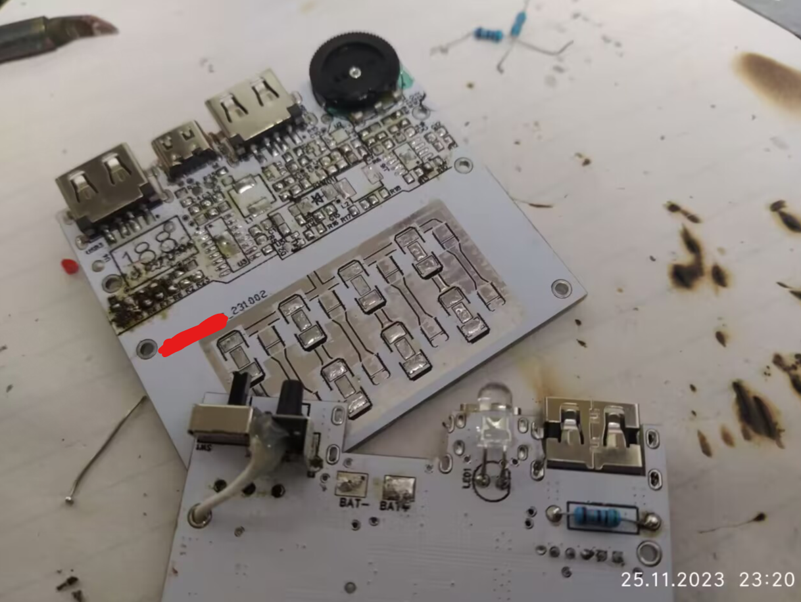

老天不想让我做充电宝
老天不想让我做充电宝
做充电宝。
请务必看到幺蛾子大赏部分。
我之前的
我之前的充电宝实在是，太像太像定时炸弹了（亚克力加螺柱结构，不久亚克力就烂掉了，之后就越来越破，这是遗照
之所以有一点纸屑，是因为怕亚克力外壳烂掉之后，螺丝或者针脚戳到电池把电池戳破（其实已经戳出来坑了，但是没破，亡羊补牢垫了点纸，后来纸掉出来一部分，就变成这个样子了
用的是淘宝去年或者前年买的IP5108电路板，没有上过机，我买到后，发现背面加焊了个0805大电容，而且PCB还是连在一起的，V割和邮票孔都没掰，microUSB定位柱也没上锡，而且不是故障品。当时是六毛还是八毛一片，买了五片。
左边那一片为我服役了两年，现在重新回到易封袋里面，回到充电宝主板的纸盒子里，等待下次使用。
IP5108是10W充电芯片，四灯电量显示。这两年，充电宝主板我至少买了60片各种方案的充电宝主板，全是捡的电子垃圾。盒子里还有38片没有用的。英集芯的比较多，其次有ETA9740，智融等。我大多用作制作手持灯了，或者用作电路改装之类，因为其实质就是高效率的 锂电池保护充电加升压加电量显示模块。就是大部分芯片的升压会在负载过小的时候自动关断。ETA9740虽然说持续5V低功耗升压，但是如果接低功耗负载的话，电感会响，而且接LED可看见肉眼可见的闪烁（忽亮忽暗）
五毛到两块钱不等，大多都是六毛一左右片买的，这种电子垃圾店的充电宝主板，不少是板子做出来了但是不打算生产充电宝的板子，这种板子质量好。
有一大部分是质检没通过的产品，这种基本寄，我买到过两批，二十片左右，修好的概率在50%，但是即使当时修好，但是返修率极高，比如漏电，用了几个月就坏掉等。
还有一部分是拆机的，是厂家回收自己的产品也不知道怎么着，还是哪些充电宝回收的人拆下来的板子，不好说。但是这些板子一般是常见方案，都不是大牌子货。
立项
我今年夏天，去坐火车去成都玩，同行一人的父母是铁路上的，我问过我这充电宝能不能带上去，他父母说可以，但是安检被截了，，，，，也算是我倒霉，刚刚好那几天是成都大运会（我不是奔这个去的，也只在成都的街头随意散步的时候偶然看到了从体育场出来的浩荡人群），安检特别严。还好有送行的人可以帮我把充电宝带回去了。
我决定，做以假乱真的充电宝！
既然是自己做，就自己画板子，自己做！不再用成品板了，这种板子要么接口不达标（没有TypeC或者只有一个USB），要么是定位设计的比较奇葩，要么是功率太小，主要是都没有百分比电量显示。百分比电量显示这东西真的非常有用。于是决定自己做，而且自学SW。
本来是打算用IP5306 I2C，用AIR001直驱/+TM1650做电量显示，后来发现IP5506-BZ-188支持直接驱动188数码管。那还何苦动用单片机！（其实支持数码管显示的型号不少）（之所以用AIR001，是因为嫖了10片，而且有开发板，不然用py32是更实惠的）
其实我早就看到有一些型号标注着数码管，当我看到188数码管只有五根引脚的时候，我以为是这种，，

后来在淘宝上看到了电子垃圾电路板的实物图，发现确实是货真价实的188数码管，后来看手册，发现这数码管结构如图：
 这IO利用率可真高。。
硬件设计
使用IP5506充电宝SOC。注意，IP5506有三个细分型号，其中IP5506-BZ-188是支持数码管的，其余两种手册中的型号是否有出货，我持怀疑态度，我猜可能没。
另外这些芯片里是有一个单片机的，同一个芯片有不同的版本，极有可能是不同的固件。似乎还支持订制数码管显示，可能是一颗8051 OTP？

LED使用BP1808驱动，支持模拟调光和数字调光，设置输出功率，3-60V输入输出范围，看着符合要求。常用的PT4115最低输入是5V或者6V（因厂商而异），锂电池是3-4.2V，应该用不了，但是我看有人这么用。

原理图

外壳设计
今年夏自学了几天SW，国庆把SW教程看完了，比较好上手，没有想象中那么难。第一次在3D打印机群（我三年前做写字机，卖主板进的群）找了个0.2/g的ABS代打。3D打印群里有不少自己组的机器接代打，pla0.15左右，abs0.2左右。这家精度不太行，侧面完全糊掉了，接口做的比较难看，但是没有东西的长侧面和有车床的地面相当不错。
侧面的层极易断裂，底面非常坚固（因为有个壳颜色错了，这台是给别人做的，我只好重打，所以把旧的掰了试了试），也不知道是ABS的特性，还是这位3D打印机的特性，还是用的ABS料比较差。
两个大小不同，一共30，邮费12。
第二次的效果就好多了。咸鱼找的大店，不是 个人，pteg 0.2/g接了我的单，河南老乡。pteg密度大不少，虽然这次减了点厚度，但是一共45，河南老乡给我包了邮。
误差非常小，虽然竖直圆形还是偏椭圆，但是两个外壳拼合得比上回好太多了，堪称完美，不用修剪就拼上了（0.2-025mm配合间隙），第一批还修剪了一点，还是翘而且上螺丝有形变弹力。这次上螺丝完全没形变。而且坚固性也不错，加热也没有异味，修整后也不难看，这料子真轩。

第一批
第二批（幺蛾子大赏）
以下记录经过大量编辑修改，本来的聊天对象不懂电子就没有电子名词，已经加上。2023/11/25一整天，就是在这样的折腾中结束的。
这一定是报应，我要反思我最近做错了什么。
xxx 2023/11/25 22:51:51
今天实在是太倒霉了
xxx 2023/11/25 22:53:05
请听我细细道来
xxx 2023/11/25 22:54:12
这次的电路板已经是我成功做了两片的电路板（已经验证过），按理说不应该出什么幺蛾子了
1.焊接好之后，发现两片的灯都有问题，调高亮度到一定值之后就开始亮度降低，后来发现这个只是IP5506给BP1808初次通电的问题，可是我明明已经重启过，总之是莫名其妙好了
当时量的时候，TJ431电压很怪，不知道是万用表的误判断，还是TJ431没运行起来。（我的万用表已经快不行了，我每次量都要好久才能或得到正确的结果，比如确认431正常工作）
xxx 2023/11/25 22:54:49
2.在测试上面的问题的时候，发现芯片的电压保护设置引脚的电压不会变，所以怀疑上面的问题是电压保护的问题，过压限制了，然后发现刚好电压保护那里有一颗电阻虚焊（R10），但是整好之后，问题依然没有解决（后来发现只是初次通电的问题）
xxx 2023/11/25 22:55:29
3.有一片刚开始发现不能调亮度，量的时候发现431正常工作，但是调节电压不会变化，后来发现又是一颗电阻虚焊（与电位器串联的一个电阻）
xxx 2023/11/25 23:05:16
4.电池的极片上不了锡，我用尽我所有的助焊剂（焊油锡浆，稀盐酸金属助焊剂），上了一个小时，才在电池上面焊了导线。
xxx 2023/11/25 23:06:11
5.把导线焊在电路板上面时，电路板上面的电池焊盘掉了，，，只好从别处又引一根线出来，从螺丝孔钻到对应位置，在外壳上把这个螺丝孔烫掉，再将两根线连在一起
xxx 2023/11/25 23:06:25
6.开关焊上之后发现歪了 没办法 我的手艺基本上没办法调整（这是重新焊接的时候发生的事情了）
xxx 2023/11/25 23:08:50
7.插上电之后发现数码管不能正常显示，缺段，我以为是数码管没焊好，加焊了一次，数码管正常了一点，然后我就接着加焊，加焊老半天可是没有用了，我以为是数码管内部坏了，就把数码管拆下来，换了一个， 拆下来的时候，量了一量通断，烫坏了一根电路板里面的线，背面的焊盘也掉了不少，没办法，新的数码管就只能悬空焊上去
xxx 2023/11/25 23:09:28
8.焊上去之后依然老问题，而且悬空焊接很不结实，碰了一下又掉了，我又想用直插电阻来搭桥，又搭了半天，搭到最后两根的时候反复焊接出错了五六次（焊上最后一根，倒数第二根掉了，我用的刀头），又搞掉一个焊盘
xxx 2023/11/25 23:10:13
9.没办法，我只能将这个电路板上所有能拆的元件全都搬到另一张空电路板上，重新开始。这次不使用铁板烧了，用热风枪吹。此外，拆下来的每个元件都很黏，都黏在镊子上，只好一个一个拆，拆一个，热风枪放下，用两个镊子把元件放在新的板子上，同时查明之所以数码管显示有问题，是又一颗数码管的限流电阻虚焊了
你撤回了一条消息
xxx 2023/11/25 23:11:18
10.我少一颗USB母座，所以本来只多一颗，旧的电路板上这个母座没办法拆掉，导致现在变成了少一颗，又要去重新订购，而且又不小心烙铁碰坏了一个电位器的塑料部分，也没法利用了
你撤回了一条消息
xxx 2023/11/25 23:12:23
11.新的电路板焊接完毕之后，发现按键没有效果，以为是按键虚焊，又把电位器翘起来检查按键（这两个插件正反面在同一个位置），反复测量阻值和电压，发现确实是按键没有焊好（之前不是说焊歪了，又导致接触不良）
xxx 2023/11/25 23:13:41
12.重新焊接之后发现。按下按键的时候，数码管会出现波动，而且按键的作用异常，双击无法关机，无法打开灯，拆掉这条线上的其它电路，都不行，从不同的角度按下按键，会有不同的效果，我以为按键内部损坏，就又把按键给拆掉，重新焊接一个
xxx 2023/11/25 23:14:21
13.烙铁不化锡，把按键这几个过孔给弄干净，又花了可长时间，烙铁感觉温度不够，但是已经烧红了，又掉了焊盘。
你撤回了一条消息
xxx 2023/11/25 23:17:57（调整了顺序）
16.焊按键之后，发现按键依然无效，经过测量发现电路板里的线又断了，只好再次飞线，因为飞线可能占用电位器空间，只能在按键上方未引出的金属引脚强行焊上了一根线，又飞了一根线，从刚才的螺丝孔穿过去，才把按键修好
xxx 2023/11/25 23:16:50（调整了顺序）
14.焊接按键完毕之后发现按键依然有问题，经过仔细排查，发现有一根极小的铜线，不知怎么的焊接在了两颗电阻的中间（可能是从上一块板子拆下来的时候带上去的），简直难以看到，去除之后，从镊子触发按键的点 不再有副作用
你撤回了一条消息
xxx 2023/11/25 23:16:16（调整了顺序）
15.因为电池的线比较粗，所以柔韧度比较差，弄着弄着就把电池的极耳（就是电池上面的焊接片）弄断了，幸好留了一点根儿，得以重新补线，不然这电池就报废了
xxx 2023/11/25 23:19:50
17.按键修好之后，发现我又把电位器给烫坏了，现在一个电位器都没了，又要去买，而且电位器的焊盘也快要掉了，如果掉了的话又要飞线
xxx 2023/11/25 23:20:24

xxx 2023/11/25 23:20:25

xxx 2023/11/25 23:21:52
18.3D模型设计依然是有一点点问题，两种不同规格的typec口，有一种可以正常放下，另一种放不下，然而我焊接的时候是随机拿的，焊上去之后就没法拆了，还好，这个外壳材料烫出来也并没有像之前那么难看
xxx 2023/11/25 23:23:02
19.折磨了我一整天的烙铁，虽然已经开暖气了，因为要焊接就开了窗户穿了袄，不知道是不是因为气温的原因，今天电烙铁温度开得很高，也很难化锡，烙铁在黑暗环境下可以看出来已经红了，就是死活不化锡。设置450度化一个小焊盘的无铅锡居然要十秒朝上，大焊盘要半分钟，有的时候快，有的时候奇慢，有的时候根本化不开。后来温度就开高，因此掉了不少焊盘，但化锡还是超级慢，清焊盘很麻烦，还老是掉焊盘。然后今天晚上比较绷不住的时候，就拿着烙铁往桌子上锤了两下（桌子上垫有一本书），然后烙铁头就弯了，，
为了换烙铁头，需要把它掰直，我没找到尖嘴钳，就用剥线钳的尖的地方，在凉的时候也很容易掰过来了。
xxx 2023/11/25 23:23:15
xxx 2023/11/25 23:24:29
20.我的万用表大概是没办法继续用了，现在好多档都有问题，什么都没接，居然告诉我电压超量程，量着一个稳定电源（4v），从10伏在20伏中间跳来跳去，现在故障时间大概是70%左右了，我只能量好些次找到一个正常值。量一次需要频繁开关万用表和换挡才能正确测量。
xxx 2023/11/25 23:25:56
21.我都不知道我运气是好还是差了，剪东西的时候，有一颗东西弹了起来（大概也就一mm大小），幸好当时眨了一下眼 那个东西从眼皮上弹走了，我听到了他落在20厘米外的声音，假如没眨眼，不堪设想，我赶紧去把护目镜带上，护目镜用的塑料是普通塑料，不耐磨，现在已经模糊的不行了，已经下单新的了